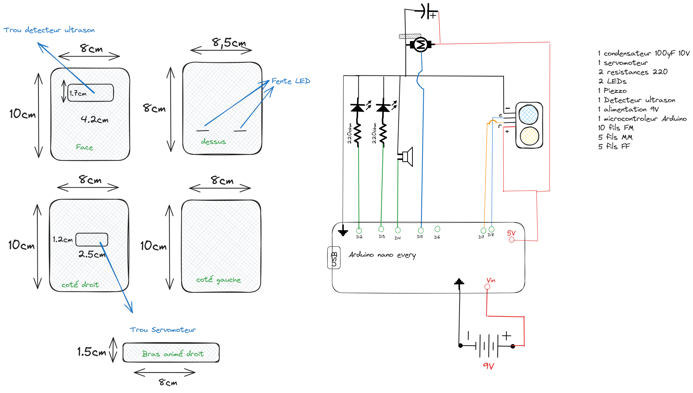
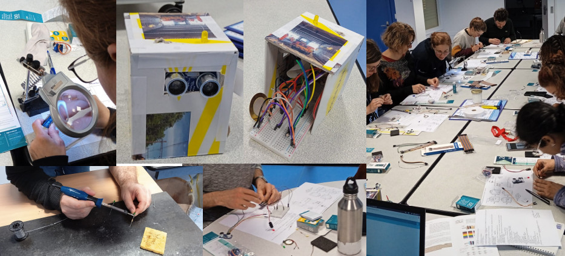

A few days ago, I had the pleasure of leading an exciting Arduino workshop, diving into the fascinating world of robot creation. From soldering to coding, through wiring, assembly, and even a bit of gluing, we managed to achieve the impossible in just two hours. In this article, I will share with you this enriching and stimulating experience.
Intense Start, but Successful: The workshop began with electrifying energy as participants were quickly immersed in the process of soldering, wiring, and assembling the components needed for their own Arduino robot. The first hour was dedicated to these physical steps, and I must say that enthusiasm and focus were palpable in the room.
Code Preparation in Advance: To streamline the process and ensure that everyone could leave with a functional robot, I had prepared the code in advance. This allowed participants to focus on the practical aspects of the workshop without worrying about complex programming. The pre-preparation also helped maintain the brisk pace of the workshop.
Two Intense Hours, but a Bit Condensed: Although the workshop was a success, it's essential to note that two hours may seem a bit short for beginners. The process of soldering, wiring, assembling, gluing, and coding can be intense, especially for those encountering Arduino for the first time. Some participants expressed the feeling that two sessions of two hours each would be more suitable to fully absorb all the information and skills required.

Functional but Unattractive Robots: Despite the time challenge, all participants succeeded in creating their own robot, even if it was a bit rudimentary in terms of aesthetics. Each one emitted a sound, lit an LED, and performed a cheerful wave by moving its arm. Satisfaction was palpable in the room as each robot was successfully tested.
Conclusion: In conclusion, the Arduino workshop was a rewarding and successful experience, despite its brevity. Participants left with a small functional robot, proud of the work accomplished in such a short time. However, it's clear that for future workshops, an approach of two sessions of two hours each could offer a more in-depth and accessible experience, especially for beginners. The Arduino adventure continues, and I'm excited to see what the next session holds!
